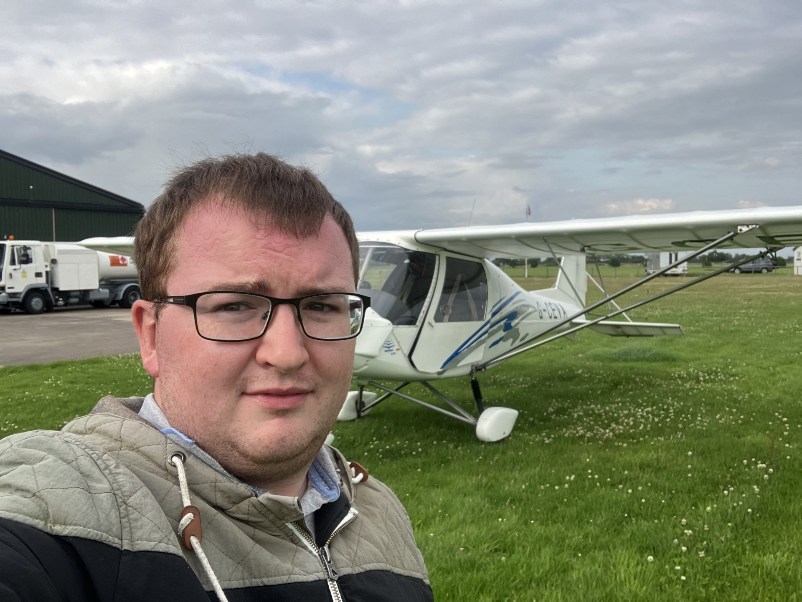

ABOUT
When I was much younger, I discovered video games. First it was racing games - Gran Turismo 3 & 4 on the Playstation 2. My local library featured a section where you could rent movies and games out that me and my dad would visit regularly, and after trying those out I quickly bought my own copies of those games.
My interest in racing games soon gave way to trying action games. The James Bond game "007 Agent Under Fire" gave me a gradual introduction to something else, as it had a number of car driving levels that I played first and then the first-person-shooter levels are something I played alongside those. The 007 games "Nightfire", "Everything Or Nothing" and "Goldeneye: Rogue Agent" were my absolute jam growing up.
(for those confused...I promise that I'm going somewhere with this, but I enjoy talking about it and being nostalgic so I'm going to continue)
After that came the purchase of an original Xbox and playing Halo: CE and Halo 2, and then after that the Xbox 360 and playing Gears Of War, Halo 3 and of course, Call Of Duty 4: Modern Warfare. This is where I got my taste for multiplayer gaming, and as a teenager I took it VERY seriously. I spent every day thinking about ways to improve my Call Of Duty skill.
To get to my point, one thing that has always been on my mind, even from a very young age, is the idea of being truly excellent at something - having a larger purpose and a clear objective. Video games were very adept at giving me this feeling in a virtual setting, and since early childhood I have thirsted for something like that to give me that feeling in real life.
My biggest interest growing up, apart from spending my weekends trying to get better at shooting virtual people, was aviation & space. The exploration of space, the air, the deep sea, and other environments little-seen by most people enthralled me. I read every story about upcoming space missions, and had a wealth of utterly, utterly useless facts about the subject.
However, as a fairly average young man growing up in Ayrshire in Scotland, there wasn't much of an opportunity to personally connect with these subjects on a real level. It all seemed - and continues to seem - very distant and "out there" (which should perhaps not be a surprise - it is "outer space" after all). That sort of conundrum can be quite demotivating.
One of the other big consequences of that interest however is that it made me interested in all of the subjects that exist around it, one of those of course being technology. And in 2020, in the midst of the Covid pandemic and UK lockdown, I started to experiment with building my own websites in HTML and CSS. I had picked a few subjects to study in my spare time - copyrighting, stock market analysis, graphic design - in the hopes of finding something that I could spin off into a side hustle, but web design really stuck with me in a way that the others didn't.
I created my first website in the space of a few days - a basic portfolio website much like this one but much, much simpler - and I was hooked by how intuitive I found it (at the very simple level of course). I made a faux website for one of my friend's brands (he never used it - I thought it was a work of art at the time but looking back on it I realise that I hadn't even gotten started yet 😂) and I also practiced making websites about my favourite subjects such as aviation. Those early days still make me very happy when thinking about them. For the first time in a long, long time, I found something that I reckoned I could be good at that would ACTUALLY be useful to people (in other words, profitable).
Around that time, I also started a YouTube channel and found the confidence (or perhaps just the lack of caring anymore) to show my face, talk into a camera and post it online for the first time. It took a little while to find my niche, but eventually I found something that people seemed to like - plane-spotting of course!
In 2022 & 2023 I also pursued flight lessons in a fixed-wing microlight aircraft, ultimately achieving a National Private Pilot's License (Microlight) or NPPL(M) for short. I also took up coastal rowing with a local club in 2024, winning medals at regattas, as well as doing some sailing, earning an RYA Competent Crew certificate. Finally I was having some of the sorts of adventures that I previously had only been on when playing video games.
All of this is to say that I am a highly driven and motivated person, who aspires not just to the ordinary, bare-minimum requirements, but to true excellence and distinction in all things I do. I am currently in Ayrshire College in Kilwinning, studying an NC Level 6 in Computing. This time next year, I hope to be studying the HNC Level 7 in Computer Science, then HND/Level 8 the year after that, and then the 3rd year of a BSc degree in Computer Science after that. I have a genuine love for the subject of computers and technology as well as web and software development and I am constantly trying to learn as much as I can about the history and the basic low-level concepts of how computers work, various programming languages and developer tools, as well as the latest developments in the most far-out areas such as AI and quantum computers.
Whilst I study however, I also have an eagerness to get started with real projects - be that creating websites for clients, contributing to open-source projects, or attending hackathons and tech networking events. I'm excited to continue this journey going forward, and I hope that I'm in fact just getting started...